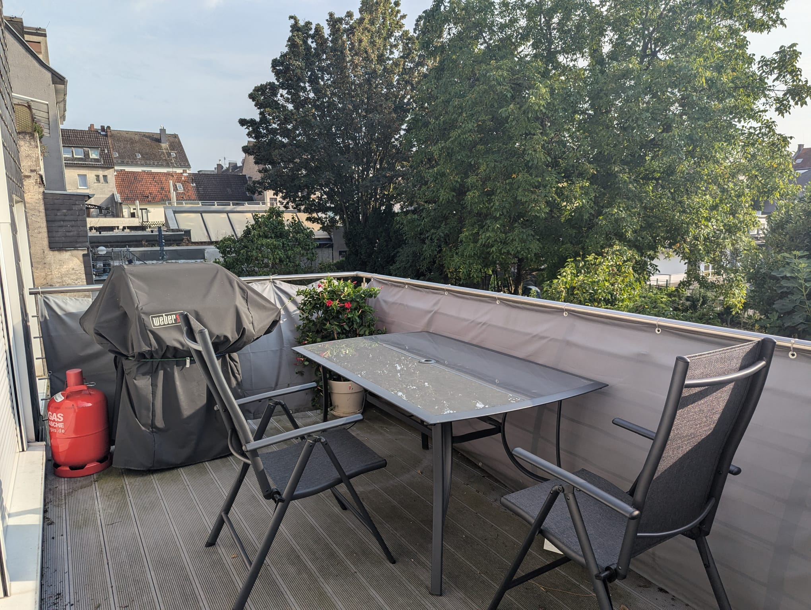
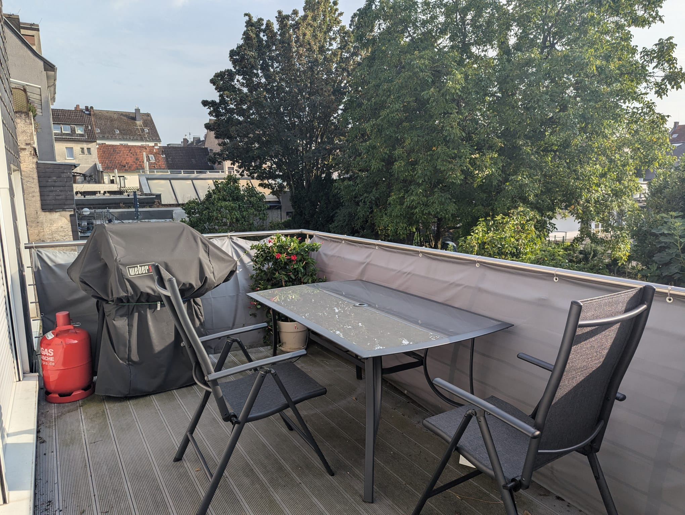
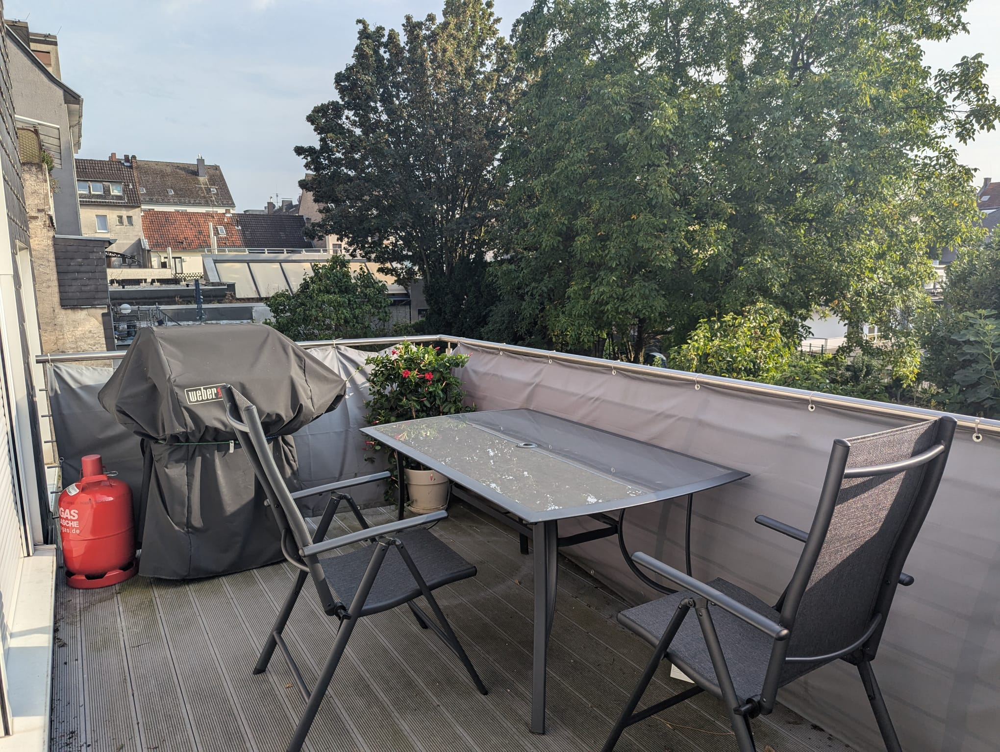

Ich suche einen Nachmieter für meine ca. 90 m2 große Wohnung in bester Lage (Nähe Maternusplatz). Die Wohnung befindet sich in belebter Wohnlage in Köln Rodenkirchen. Mehrere Bus- und Straßenbahnlinien verkehren in der Nähe (u.a. Bahnlinien 16 & 17). Zu Fuß erreichen Sie einige Restaurants, Ärzte, Bäckereien, Cafés und ein Einkaufszentrum. Einige Modegeschäfte, Grün- und Parkanlagen, Fitnessstudios, Brauhäuser und eine Buchhandlung finden Sie ebenfalls vor Ort. Zur hübschen kölschen Riviera sind es nur 2-3 Gehminuten. Das Herzstück der Wohnung ist ein lichtdurchfluteter Wintergarten, der ideal als Esszimmer und Rückzugsort zum Entspannen genutzt werden kann. Der großzügige Balkon in Südlage erweitert den Wohnraum zusätzlich und lädt zum Verweilen mit Blick ins Grüne ein.
Wichtige Details im Überblick
- Verfügbar ab 01.04.2024 (VB)
- Gesamtmiete (warm) derzeit bei 1350€
- Die bestehende Einrichtung muss für 6500€ übernommen werden (siehe Liste anbei)
